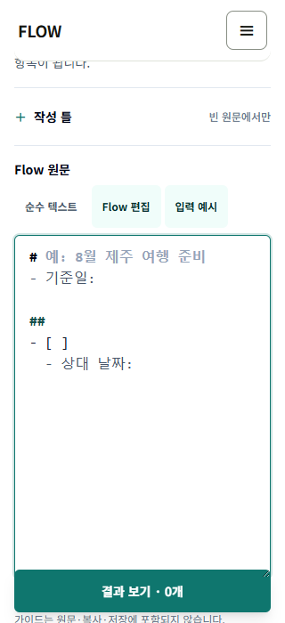
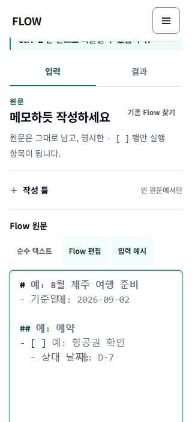
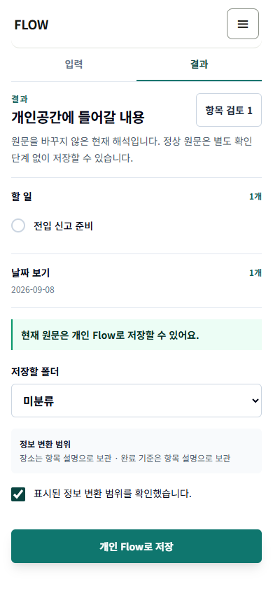

개인공간
폴더·기간·상세·완료·실행 위치와 저장 상태 피드백을 유지합니다.
FlowMe integrated PoC · authoring to workspace parity
v4.1 개인공간, 개발 1 saved-plan 편집, 개발 2 Text Authoring의 결정을 같은 원문·개인 Flow·실행 위치 계약으로 연결했습니다. React와 조작형 단일 HTML을 같은 기준으로 구현하고 최종 통합 브라우저 검증까지 마쳤습니다.
화면 모양을 한쪽에 맞추는 작업이 아니라, 각 세션에서 확정한 소유권과 조작 흐름을 하나의 제품 계약으로 합쳤습니다.
폴더·기간·상세·완료·실행 위치와 저장 상태 피드백을 유지합니다.
네 origin은 읽기 전용으로 투영하고, 개인 사본의 변경만 shadow state가 소유합니다.
원문 편집기는 하나이며, 작성 틀·입력 예시·파생 결과·선택형 검토를 보존합니다.
기능은 되지만 기존 결정과 달랐던 단계 구조, 빈칸 예시, 저장 정체성, 작은 화면 겹침을 우선 닫았습니다.
여섯 틀의 이름·용도·짧은 예시·전체 원문 예시·scaffold를 versioned 계약으로 맞췄습니다.
ghost는 source·clipboard·selection·draft·Undo에 들어가지 않고 포인터와 접근성 트리에서도 빠집니다.
같은 source는 같은 handoff identity를 사용합니다. 늦은 실패는 state와 draft의 이전 bytes를 함께 복원합니다.
저장 영수증의 주 행동을 `개인공간에서 열기`로 정리하고 같은 Flow 상세로 이어지게 했습니다.
편집기·CTA 겹침을 없애고 844×390에서는 chrome 높이와 panel scroll을 줄였습니다.
단일 HTML 두 파일을 다시 만들었습니다. fixture-only라는 경계를 유지하면서 직접 조작할 수 있습니다.
제품 기능과 저장 경계는 통과로, 저장 경계와 무관한 기존 콘텐츠 신선도 실패는 부분으로 분리했습니다. 버튼으로 현재 상태만 골라볼 수 있습니다.
picker의 짧은 예시, 선택 뒤 전체 예시, exact scaffold와 인식 가능한 모든 빈 값 ghost를 구현했습니다. React component와 독립 HTML 자동화가 각각 확인했습니다.
강제 3단계와 일반 확인 checkbox를 없앴습니다. 정상 원문은 선택형 검토를 건너뛰고 결과와 저장으로 갑니다.
저장 뒤 같은 개인 Flow의 상세를 열고, 편집·기간 보기·새로고침 복구까지 이어지는 통합 경로를 실제 브라우저에서 확인했습니다.
stable fingerprint를 사용해 첫 저장 뒤 같은 Flow를 다시 찾습니다. 개인 Flow 추가는 0건이며 기존 영수증으로 돌아갑니다.
standalone의 state 기록 뒤 draft 제거가 실패해도 두 key를 이전 bytes로 되돌립니다. 성공 표시와 성공 mutation은 0건입니다.
모델·component와 양쪽 surface를 한 run에서 비교해 취소와 no-op의 mutation 0건, 동일 transition 결과를 확인했습니다.
React와 독립 HTML 모두 여섯 화면에서 핵심 행동, 가로 넘침, console·page 오류를 검사했습니다. 320px CSS viewport를 200% 등가 reflow proxy로 사용했으며 실제 브라우저 zoom 200% 검사는 별도입니다.
production build와 정적 페이지 18/18 생성은 통과했습니다. 전체 npm은 1,520/1,521이며 기존 `seed-flows` review_due 신선도 1건에서 fail-fast로 멈췄습니다.
여기 적은 수치는 이번 목표에서 실제 실행한 결과입니다. 통과하지 않은 전체 회귀도 실행 수와 원인을 그대로 남겼습니다.
새 계약 3건을 먼저 실패시킨 뒤 구현해 전부 통과했습니다.
관련 순수 모델·component 회귀가 통과했습니다.
catalog·identity·transaction·native Undo·rollback을 포함합니다.
여섯 viewport와 입력 예시·native Undo 시나리오를 포함합니다.
production build 안의 lint와 TypeScript 검사가 통과했습니다.
정적 페이지 18/18을 생성했습니다.
React·standalone·handoff·저장 경계를 한 번에 재실행했습니다.
기존 콘텐츠 신선도 1건에서 fail-fast로 중단됐습니다.
lib/flow/seed-flows.test.ts의 dog-adoption-first-week:review_due:2026-06-04가 2026-09-03 기준으로 신선도 조건을 넘었습니다. 콘텐츠 검토 없이 날짜를 바꾸지 않았고, 최종 전체 테스트를 통과로 과장하지 않습니다.
React와 독립 HTML을 실제 Chromium 자동화로 검사했습니다. 아래 결과는 실제 Android Chrome이나 iOS Safari 검사가 아닙니다.




PoC가 개인공간처럼 보여도 쓰기 권한은 전용 shadow state에만 있습니다. standalone 자동화는 정상·재시도·실패를 모두 포함해 경계를 검사했습니다.
시나리오 시작 전에 operating sentinel의 key와 value bytes를 저장하고, 성공·같은 source 재시도·강제 late failure 뒤 다시 비교했습니다. React와 독립 HTML을 포함한 최종 통합 실행에서 허용 prefix 밖 setItem·removeItem·clear는 0건이었고, 운영 sentinel의 key와 value bytes도 전후가 같았습니다.
이번 목표의 작성 일치 구현에 직접 연결된 파일만 묶었습니다. 기존 dirty 작업 전체를 이번 변경으로 주장하지 않습니다.
자동화로 닫을 일, 실제 기기에서 확인할 일, 제품 정책으로 따로 결정할 일을 분리했습니다.
review_due가 2026-06-04로 신선도 기준을 넘었습니다. 콘텐츠 owner가 재검토한 뒤 날짜를 정해야 하며, 이번 PoC가 근거 없이 metadata를 바꾸지 않았습니다.
Chromium viewport와 캡처로 대체하지 않습니다. 이번 작업에서는 미실행입니다.
이번 P0의 Todo·날짜 preview와 개인공간 인계 범위를 넘으므로 완료로 올리지 않습니다.
계정·revision·publish 소유권과 운영 반영 승인이 필요합니다. PoC가 정책을 대신 확정하지 않습니다.